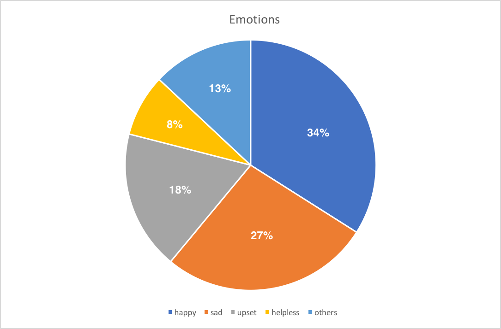

As a software team, we felt obligated to help other team with our expertise in software development and data processing. Besides, for experiments aspect, we thought we have plenty of experience to learn from others. Thus, we decided to join the community vigorously and reached out for 4 registered teams this year in traditional tracks: NJU-China, HKUST, SCUT-China_A, and SYSU-CHINA. And we also worked with SCAU-CHINA who will participant iGEM next year (They conduct their project for two years) for holding a synthetic biology conference on their campus.
At the very beginning of this year around the end of March, NJU-China got interested in weight -reducing drugs. They noticed that people may use various emojis when it comes to topics related to “losing weight”, “body weight”, “fat” on their microblog. Some people may be eager for practicing their body so a very positive emoji would be used on their microblog while others are totally opposite. Out of an objective perspective, some big data was needed to scope a general relationship between the three keywords and the emojis used by microblogers under the analysis of statistics. As a result, they reached out for us.
In this case, we built a python spider for them to extract big data to dig out the relationship between the three key words they wanted and emojis that people post on the social microblog media, specifically on WEIBO, in the last whole year (2016.1.1-2017.1.1). All the robot abstractor we built has been under the regulation of “Robots Protocol” file stated by the official WEIBO company on their website.
After couple of online discussion, the total 17 emojis related to the three words on microblog database were classified into 5 sorts: “Happy”, “Sad”, “Upset”, “Helpless”, and “Others”.Two conclusions can be drawn from the data. First is that 53% of people tend to use negative emojis when they mentioned “losing weight”, “body weight” and “fat”, which reveals about half of the population dislike the process of losing weight. Second is that the emoji “crying” is the commonest emoji, about 17% among all types of emojis, when people’s microblogs contain words related to losing weight or fat. This conclusion reinforced the first conclusion that losing weight is actually a quite annoying process where half of our people may have trouble on different levels.
This background analysis laid a solid foundation on their project motivation this year. By confirming with positive relationship between bad emotions and loosing weight, they conducted a project for producing weight-reducing drugs by engineered organism which may greatly innovate the way we deal with the weight losing matter.
Figure 1. Data analysis in pie chart. We can see from the chart that “crying” is the most mentioned words when it comes to losing weight.
Figure 2. Another pie chart reveals that about half of the emojis are negative when it comes to the three words.
During the collaboration, NJU-China tried our software when we released our origin version to them and gave us helpful feedbacks based on which we improved our UI and operating logic of design platform. Additionally, they also give us valuable advice on Interlab Study.
HKUST from HongKong University of Science and Technology posted their requirements on visualizing the map on the iGEM official websites community and we happened to share similar interest on their requirements. So we met together and collaborated with each other in Sep and Oct.
Figure 3. : Collaboration with HKUST.
Serving for the goal to help everyone who is interested in Synthetic Biology generating their idea rationally, we managed to provide a visualization tool for presenting the relationship between projects and hot topics. Each blue node stands for a topic key word and other nodes in different colors stands for team’s previous work in different tracks. Teams who shared the same key words of topic would be connected to the same blue node where the words of the topic will emerge above the node when it is single-clicked. It has the same operate logic when it comes to the teams’ nodes which will jump to their own wiki when clicked. The connection data was provided by HKUST manually.
This visualization tool can be tried below or on HKUST’s wiki. The code to utilize this function can be found on our github repo.
Figure 4. Visualization tool we built for HKUST.
Our software focus on search and design which highly relies on users’ feedbacks. We asked HKUST to use the our software and got a positive feedback. They said they struggled a lot when they brain-stormed at first and found it’s hard to find the synthetic biology work with similar topic straightly and connectively, which is also why they want us to build a visualization tool for them, actually for the whole community. Besides, since the programmer in their team has a strong background in Computer Science, whom win the Gold Medal of International Olympiad in Informatics(IOI), we also discussed a lot on the backend and algorithm of our project, which turned out to be quite helpful for both of us. Besides, we also visit their lab and got some advice on the experiments implementation.
Figure 5. Li Tianqin, our team leader, explained how would our software solve the puzzle for synthetic biologists and guide them to use our software for all the useful functions, including searching, designing and simulating.

Figure 6. We visited their lab in HKUST and discussed about the experiments in Synthetic Biology, especially the Interlab Study and the main projects. Ideas of standardization and other engineering principles have been fully understood and applied by each team in the process of wet lab implementation. However, we also talked about the phenomena on regulation leaking and other unpredictable aspects in biology experiments where we encouraged each other for further research and study.
We collaborated with SYSU-CHINA for holding the Annual Biology Festival on our campus and exchanged our ideas on Synthetic Biology and iGEM frequently. Besides, they also give us some practical advice on Interlab Study and the validation experiment while our knowledge on modeling and data processing also advised them on their modeling construction part.
Figure 7 .The Annual Biology Festival held with SYSU-CHINA on which we managed to explain what we synthetic biology can help in the real world and aroused the public’s interests on iGEM and Synthetic Biology. We also corrected some misunderstanding of some people on synthetic biology and engineering genetics with scientific evidence and rational analysis.
It’s quite admiring for the outstanding performance of SCAU-CHINA last year in iGEM. This year, we are very pleasant to reach out to them and got several meet-ups during the whole year. We exchanged our ideas on plenty of aspects such as the importance and the tendency of Synthetic Biology, the experience on running a well-organized team and so on. We managed to collaborate on holding a synthetic biology meeting on their campus and introduced our software to the public. Additionally, we also visited their lab and guide them to tried our S-DIN project for search and design process. They shared the same concern with us on the information integration matter and gave us positive feedbacks on the user-friendliness aspect and our simulation functions. For their next year project, they said they will use our software for the pre-brainstorm inspiration and the design process in order to save plenty of time for detouring around aimlessly.
Figure 8. We held a synthetic biology meeting on SCAU campus and introduce our software and the web-based game to the public.
Figure 9. We visited the lab of SCAU-CHINA and exchanged plenty of ideas on each other’s project.
We met SCUT-China_A in April on a meet-up meeting among teams in Southern China. This year they use the Mer-merr bi-direction promoter to sense mercury (Hg) in the environment. If the concentration of Hg transcend a threshold, Hg can repress the repressor of cds of SRRz protein, which will lead to the expression of SRRz protein. Cells lysis process could be detected because the release of the beta-galactosidase which is not able to spread cross the cell membrane at a normal situation will trigger the chromogenic reaction of oNPG whose tube will turn yellow. Since they were not aware of whether the design could work and the approximate range of expression level of the SRRz gene before the experiment, they reached out for us to do a simulation for their genetic circuits.
We built a model for their project using the same algorithm that utilized in our software simulation section. The following is the circuit they designed for their project redrawn by our design platform.
For a preciser measurement of the expression of their gene, SRRz gene, they used GFP as a reporter in this case alternatively. Our model simulated the concentration of the GFP expressed in their system.The mathematic formula and parameters’ and the results are as follows:
The simulation result is as follow：
The real line chart is as follow:
The fitted curve of all the spots generated from real experiment can be seen from here:
From the three figures above, we can prove that our simulation have the same trend of the real experiment data, which also gave SCUT-China_A a meaningful design performance forecast.
Besides, our team also troubleshooted the image processing software of their project whose aim is to get the yellow degree of an experiment tube so that they can measure the concentration of the SRRz protein. We improved the system behavior and back-end of the software and gave some advice on during the implementation process.
During the whole collaboration process, we established very closed friendship. The team leader Chen Nanzhu and other team members also gave their feedbacks after we got an embryonic form of our main project. Besides, we also invited them for holding a high school meeting which we organized at very beginning.